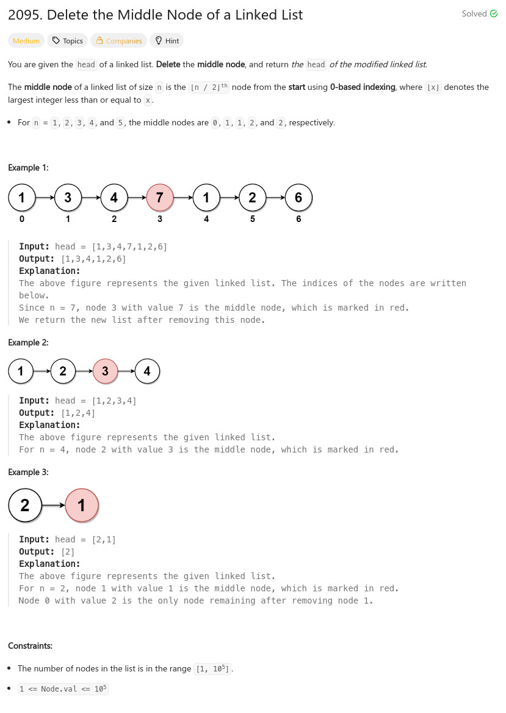

題目：

/**
* Definition for singly-linked list.
* struct ListNode {
* int val;
* ListNode *next;
* ListNode() : val(0), next(nullptr) {}
* ListNode(int x) : val(x), next(nullptr) {}
* ListNode(int x, ListNode *next) : val(x), next(next) {}
* };
*/
class Solution {
public:
ListNode* deleteMiddle(ListNode* head) {
int cnt = 0;
ListNode *p0 = head;
ListNode *p1 = head;
while (p0) {
cnt += 1;
p0 = p0->next;
}
cnt >>= 1;
if (cnt <= 0) {
return NULL;
}
p0 = head;
p1 = head;
while (cnt--) {
p0 = p1;
p1 = p1->next;
}
p0->next = p1->next;
return head;
}
};